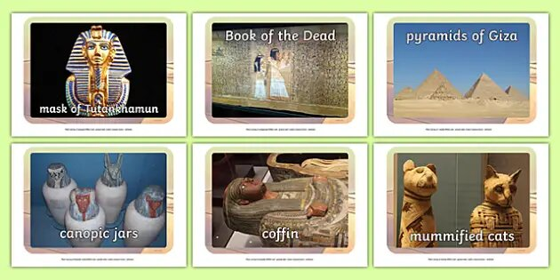

.jpg)
The world is obviously filled with a lot of things to discuss. There are lots of opinions, perspectives, and belief. But in all races, religion or place you’ll be, the world may agree to house of facts: SCIENCE.
Science is the culmination of knowledge. Taken from observation, perception, and pure understanding of human to the natural world, be it with practical use or none. But how exactly human society adapts with the advancement of science throughout time?
Since humans tend to understand more, and science has been seen as a practical tool, they developed methods.
- ➢ Observe
- ➢ Ask question
- ➢ Form a hypothesis
- ➢ Make predictions based on hypothesis
- ➢ Test prediction
- ➢ Repeat the process if necessary
From the Stone age, in which humans developed stone tools, up to the current time, science and technology affects how society lives. Artifacts reveal how humans adapt to their environment like doing pyramids in Egypt which is resilient to sandstorms and extreme heat, fishing and boat making for people living in islands, haunting and farming in plain lands, and a lot more which is a practical application of science and Technology.

And because living a life requires a lot of things, different division or branches of sciences rise. There are: - Physical sciences - which pertains to the observable phenomenon in the world and outer space
- Biological Sciences– which talks about the physiology and mechanism of living things and their basic unit.
- Psychological sciences – which is considered soft science but essential for describing behavior of individual or even to a group of people which includes society.
In conclusion of what I have learned, science is the tool for collection of data and technology is the application of it. Science affects the technology and is the basis of different places for a technology to be done. Through adaptation to their necessity per region, different sciences were done using different approaches as well.